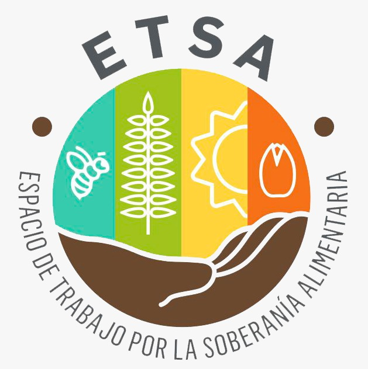

|  | SOBERANIA ALIMENTARIA |
|
| ETSA2015 | ||
Que es el ETSA y cómo surge esta agrupación
El Espacio de Trabajo por la Soberanía Alimentaria (ETSA) surgió a partir del Curso-Taller “Soberanía Alimentaria y Agroecología” que se realizó en el año 2013 en el Departamento de Agronomía de la Universidad Nacional del Sur (UNS), Bahía Blanca. Se fue gestando a partir del interés de un grupo de docentes, profesionales y estudiantes universitarios, relacionados con las ciencias agrarias y sociales, cuyas preocupaciones giraban en torno al sistema agroalimentario que se desarrolla en nuestro país. El principal cuestionamiento fue la falta de contenidos vinculados con la soberanía alimentaria, la agroecología y la agricultura familiar, en los planes de estudio de las carreras de Agronomía, Biología, Economía y Geografía, entre otras.
Como su nombre lo indica, el ETSA surgió como un espacio, espacio que se abrió para hacer un hueco en el paradigma dominante, en la forma hegemónica de entender nuestro sistema de producción, distribución y consumo de alimentos; y para instalar el debate –necesario y urgente– sobre las implicancias sociales y ambientales de nuestro sistema agroalimentario. Desde un primer momento fue la Universidad el lugar que nos nucleó para compartir ideas, saberes, sentires, que distaban –salvo excepciones– del contexto ideológico de enseñanza y aprendizaje dominante que nos rodeaba.
Si bien los comienzos no fueron fáciles, hoy el ETSA continúa trabajando en la difusión, comunicación y recuperación de saberes vinculados con la soberanía alimentaria, habiendo sumado a diversos actores interesados en estas problemáticas (productores, consumidores, estudiantes y profesionales de diversas disciplinas).
Qué entendemos por soberanía alimentariaSe entiende como el derecho de un país a definir sus propias políticas y estrategias sustentables de producción, distribución y consumo de alimentos. Su objetivo es garantizar el derecho a la alimentación sana y nutritiva para toda la población, respetando sus propias culturas y la diversidad de los sistemas productivos y de gestión de los espacios rurales. |
La importancia de la soberanía alimentariaLa soberanía alimentaria pone a los consumidores en el centro de las decisiones alimentarias, tratando a los alimentos de manera más justa. Esto permite elegir sistemas alimentarios que contribuyan al bienestar y la salud de las personas. |
Cómo lograr la soberanía alimentariaPara lograr la soberanía alimentaria, es importante conocer el origen y la producción de los alimentos que consumimos, pagar un precio justo y culturalmente adecuado, elegir alimentos con plena conciencia y decisión, priorizar circuitos locales, regionales y nacionales, romper con el mito del comercio internacional como solución para acabar con el hambre en el mundo, y promover la agroecología, la economía social y solidaria, y el consumo responsable y activo. |
La soberanía alimentaria y sus beneficiosLa soberanía alimentaria permite tener plena conciencia y decisión respecto a la comida, disponibilidad y variedad, acceso directo de la tierra al plato o en el centro de los campesinos y campesinas, acompañándoles en la producción de alimentos al margen de las reglas de juego impuestas por el mercado. Asimismo, implica colocar en la producción de alimentos la distribución y el consumo sobre la base de la justicia social, la independencia económica y la soberanía política. |
ConclusiónEn resumen, la soberanía alimentaria es un concepto fundamental para garantizar el derecho a una alimentación sana y nutritiva para toda la población, respetando sus propias culturas y la diversidad de los sistemas productivos y de gestión de los espacios rurales. Para lograrla, es importante conocer el origen y la producción de los alimentos que consumimos, elegir sistemas alimentarios justos y sostenibles, y promover la agroecología, la economía social y solidaria, y el consumo responsable y activo. |
|
Nuestras actividades en estos añosDesde hace varios años, y cada vez con más fuerza, en el sur de la provincia de Buenos Aires se multiplican acciones desde los territorios locales con el objetivo de modificar el sistema agroalimentario hacia uno más justo, equitativo y ambientalmente sostenible. Estas iniciativas tienen lugar tanto en entornos urbanos como rurales, y nacen desde una demanda por parte de los productores agropecuarios, así como movilizadas por los propios consumidores. En este sentido, el ETSA viene acompañando y participando de muchas de estas experiencias, entre las que mencionamos algunas que se han desarrollado: |
|
|
 |